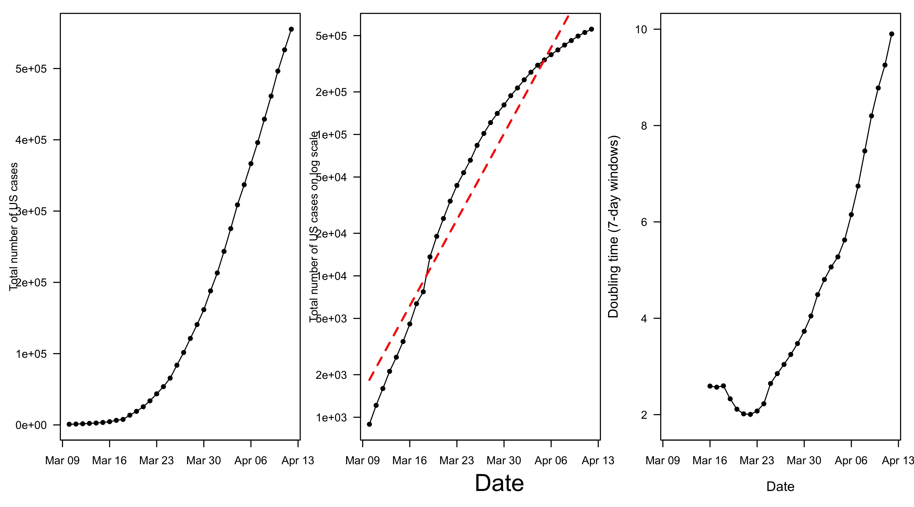

This page will track daily state-level differences in the COVID-19 dynamics for the United States. All the data used here comes from John Hopkins University and the CDC . We are now trying to determine what is causing the differing state-level trajectories. Please let me know if you are interested in contributing to this project. A preprint and R code are available here.

Fig 1: (left panel) Total number of COVID-19 cases for the US over time. (center panel) Total log number of COVID-19 cases for the US over time. (right panel) Rolling doubling time (7-day windows).Fig 2: (a) The log number of cases over time for each individual state for the 10 days since their first day of 25 total cases. (b) The log number of cases over time for each individual state for the most recent 10 days. The light grey diagonal lines represent the growth trajectory for doubling times of 2, 4, and 10 days. The log number of the starting value (intial number of cases on first day when at least 25 cases were recorded) had to be subtracted on the y-axis to standarize the graph across states. (c) Rolling doubling times calculated over 10-day windows for each individual states. (d) Distributions of state-level doubling times early and more recent in the course of the outbreak. The figure was produced on 14-Apr-2020.Fig 3: Doubling time (in days) for various US states with at least 25 cases.